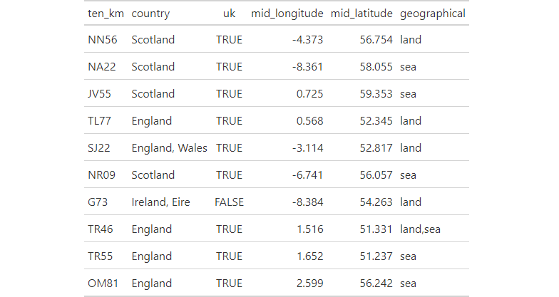

This datasets lists the 10km grid squares occurring in the UK and Ireland, as well as the Channel Islands and Isle of Man. For each 10km grid square which country(s) it occurs in, whether it is in the UK and is on land or in sea is given, as well as the latitude and longitude for the mid centroid point.
uk_ireland_tenkm_grid_squares
A tibble with 11219 rows and 6 variables.
Ten km grid square.
List of countries containing the 10km grid square.
Whether the 10km grid square is in the UK or not.
Longitude of 10km grid square centroid, to three decimal points.
Latitude of 10km grid square centroid, to three decimal points.
Whether the 10km grid square is on land or in the sea.
Sample of 10 rows from uk_ireland_tenkm_grid_squares dataset.

suppressPackageStartupMessages({ library(store) suppressWarnings({ library(dplyr) library(gt) library(here) library(fs) library(pagedown) }) }) # create figures directory dir_create(path(tempdir(), "figures")) # create html table uk_ireland_tenkm_grid_squares %>% filter(!is.na(country)) %>% slice_sample(n = 10) %>% gt_preview(top_n = 10, incl_rownums = FALSE) %>% gtsave(path(tempdir(), "figures", "uk_ireland_tenkm_grid_squares.html")) # convert to image chrome_print(path(tempdir(), "figures", "uk_ireland_tenkm_grid_squares.html"), format = "png") # move image file_move(path(tempdir(), "figures", "uk_ireland_tenkm_grid_squares.png"), here("man", "figures", "uk_ireland_tenkm_grid_squares.png"))#> Error: [ENOENT] Failed to move 'C:/Users/GRAHAM~1/AppData/Local/Temp/Rtmpk1Kwux/figures/uk_ireland_tenkm_grid_squares.png'to 'C:/Users/Graham French/AppData/Local/Temp/RtmpUF1nMv/file4adc1e77ad1/man/figures/uk_ireland_tenkm_grid_squares.png': no such file or directory